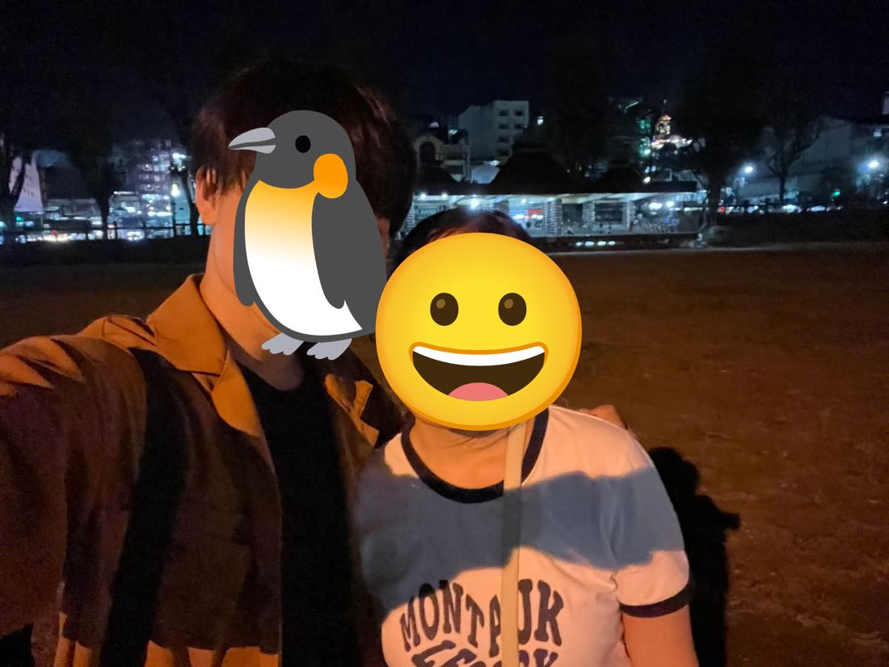

🌲 MY LANGUAGE SCHOOL DAYS IN BAGUIO
2 / 6🇵🇭 LIVING IN THE PHILIPPINES⚡ 40 SEC
Burnham Park was a rare flat place to walk in hilly Baguio
Walking in Baguio, a city on a mountain
Uphill, downhill, uphill again…🌳 Burnham Park: finally flat
📚Why Baguio
I went to Baguio in the Philippines to study English. One of the things that surprised me most was how few flat roads there were.
⛰️Mountain City
Baguio is a city high in the mountains, so it is cool and comfortable even though it is in the Philippines. But the city is full of hills.
↗️Every Sidewalk
Even on the sidewalk, it feels like uphill, downhill, then uphill again.
🚶My Request
I like walking, so I often thought, “I just want to walk slowly on a flat road.”

🌲The Flat Place
In the area where I stayed, Burnham Park was a rare place where I could walk slowly on a relatively flat road. If you are tired of the hills in Baguio and want a flat place, I recommend it.
PREVIOUS POST
My language school life in Baguio was full of good memories